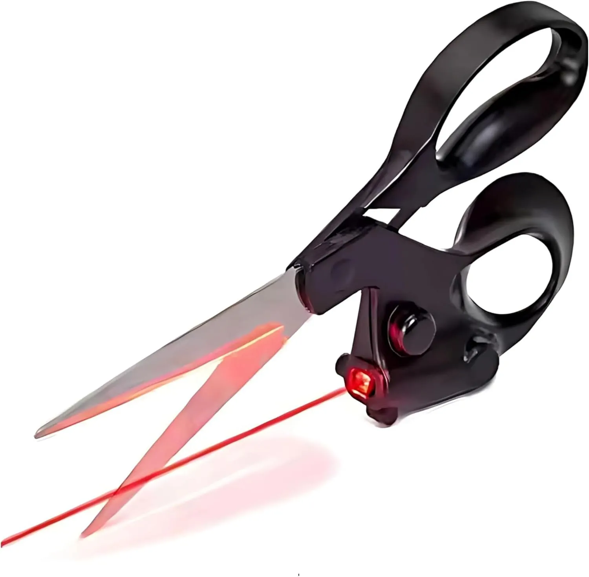
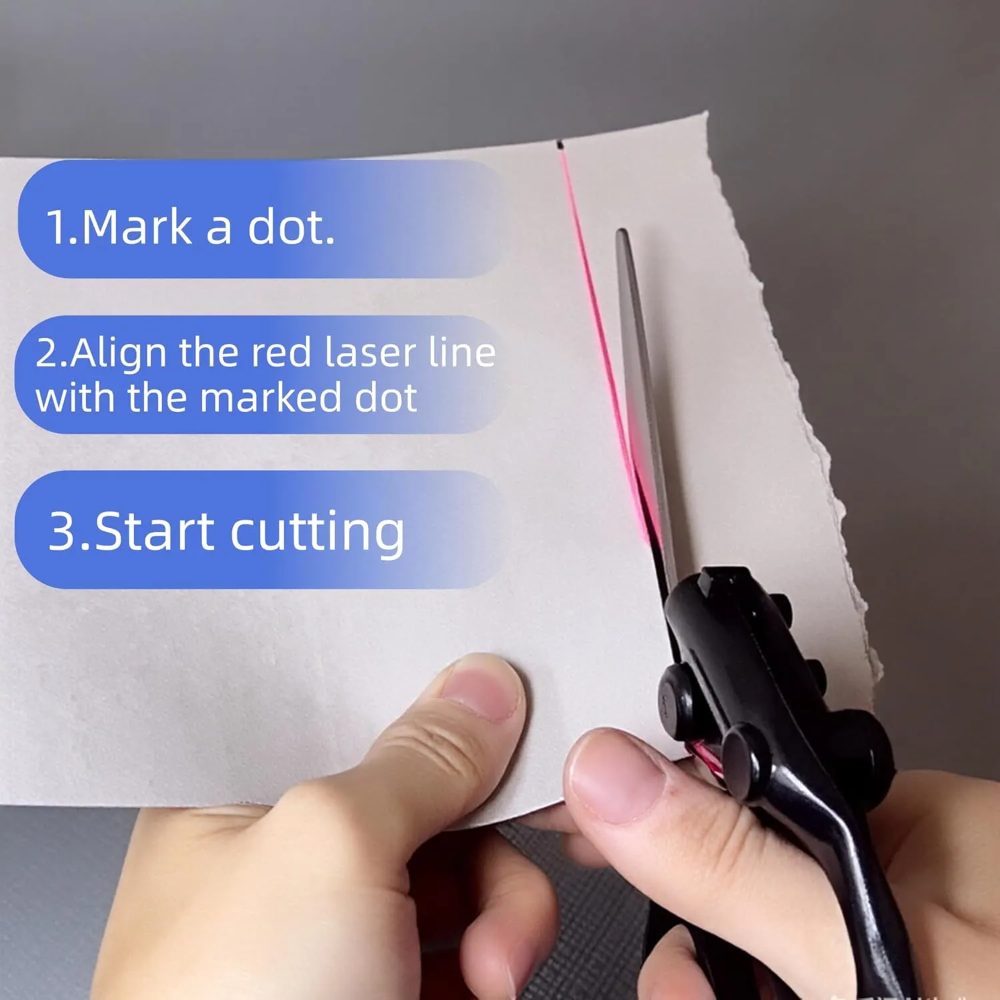
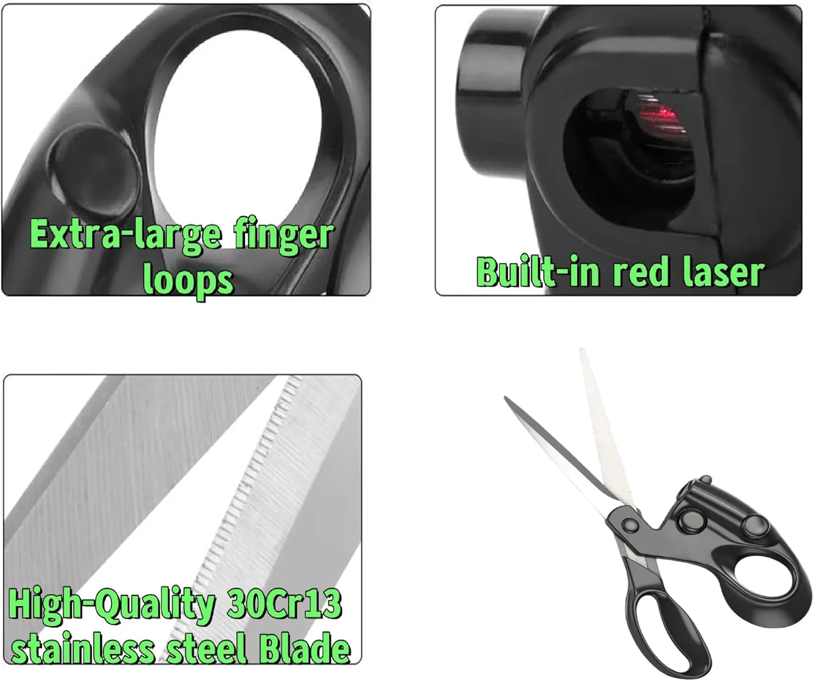
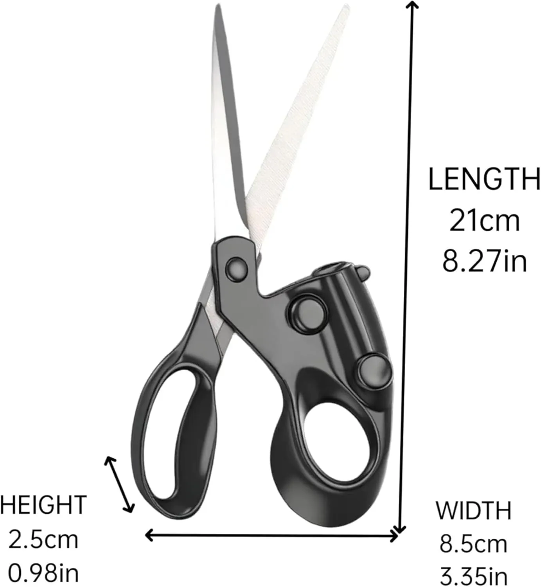

Follow the visible red line
The built-in laser helps create a visual path so you can keep your cut more aligned across fabric, paper, and craft materials.
These laser guided sewing scissors add a visible red guide line to your cutting path, making them useful for fabric, paper crafts, gift wrapping, DIY projects, and home sewing.
This is an editorial affiliate page. The product is sold on Amazon, not directly by Merchant. Always check the live listing for current product details, price, availability, and included accessories.

Cutting long straight lines by hand can be frustrating. A visible laser guide gives your eyes a clear line to follow while you cut.

The built-in laser helps create a visual path so you can keep your cut more aligned across fabric, paper, and craft materials.
A smart option for home sewing, paper crafts, gift wrapping, pattern trimming, and DIY projects where clean edges matter.
The laser does not replace careful handling, but it can make alignment easier than freehand cutting alone.
Keep the concept simple: set your starting point, use the laser as a visual guide, and cut slowly for a cleaner line.
For best results, mark your material first so the laser has a clear path to follow.
Position the laser line along your intended cut before moving the blades through the material.
Move slowly and keep the laser aligned to reduce uneven edges and improve consistency.
This is a simple upgrade for people who regularly cut straight lines and want a visual guide built into the scissors.
Useful for cutting fabric panels, patterns, and straight edges during home sewing projects.
Helps keep paper cuts cleaner when trimming wrapping paper, ribbons, or decorative sheets.
A helpful tool for scrapbooking, school projects, home crafts, and creative cutting tasks.
The laser is the hook, but the handle shape, blade material, and overall size also matter for everyday use.

A visible guide line helps you aim your cut more confidently than standard scissors.
Larger loops can feel more comfortable during repeated cutting sessions.
The listing highlights 30Cr13 stainless steel for a sharper, more durable cutting edge.
Always confirm the latest dimensions, included parts, battery needs, and instructions directly on Amazon.

Laser guided scissors still require steady handling and careful setup. They are best for straight-line cutting guidance, not curved precision work or heavy-duty industrial cutting.
Quick answers to help shoppers understand the product before clicking through.
No. The laser is a visual guide. You still need to align the scissors, hold the material steady, and cut carefully.
They are best positioned for fabric, paper, gift wrapping, crafts, light DIY projects, and home sewing tasks. Check the Amazon listing for any material limits.
It can be useful when trimming straight fabric lines or patterns, especially when you want a visible guide before cutting.
Check current price, availability, product photos, dimensions, battery requirements, instructions, return policy, and buyer feedback directly on Amazon.
View the live Amazon listing for current price, availability, product details, instructions, and customer reviews directly on Amazon.